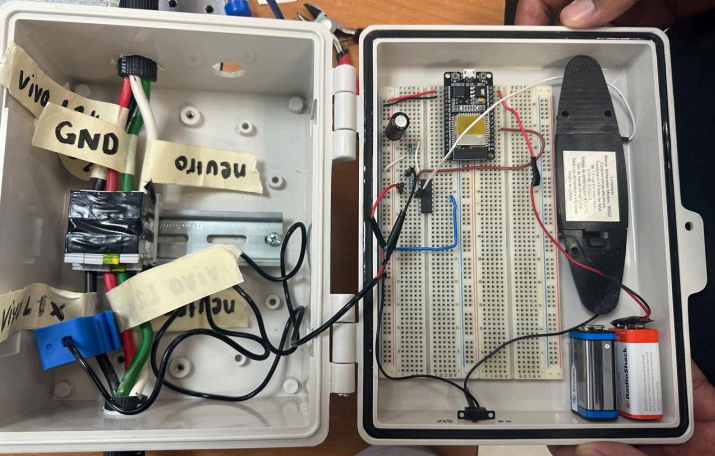
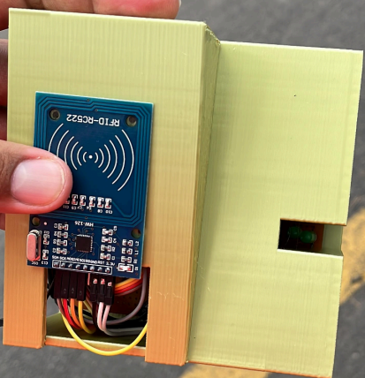
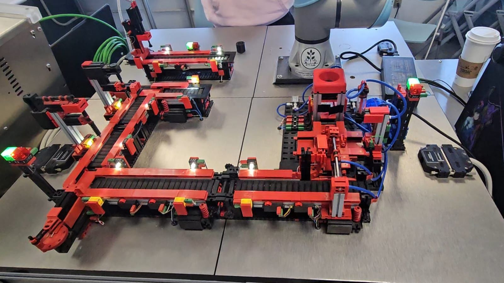

Industrial Automation Training Cell
Skills gained: PLC Programming (TIA Portal), RFID programming (Arduino, C), CAD Design (SolidWorks)
In the interactive cell, a non-invasive current sensing system for the Lathe machine (ROMI T240) using an SCT-013 sensor was implemented. The sensor detects current via the Hall effect and feeds the signal to an ESP32 microcontroller. I developed the analog signal processing circuit, including a voltage divider, filtering capacitor, and voltage follower, ensuring the signal was safely and accurately read by the ESP32. Additionally, I programmed the ESP32 to read the current in real time, compute the RMS value, and transmit the data to a Node-RED dashboard via MQTT. This system allows monitoring of amperage, average power consumption, and graphical visualization of current over time.

An RFID-based system access system was implemented by using an ESP32 and the MFRC522 module. This system identifies users and grants different levels of access based on pre-registered IDs. The ESP32 publishes the access data to an MQTT broker, which is then visualized in the Node-RED dashboard. Unauthorized users are denied access, and login/logout operations are logged for tracking.

I programmed the automation routines for the manufacturing cell, enabling safe and efficient operation of tasks such as stamping, drilling, milling, and pressing. This logic ensures synchronization between stations, communicates with the Siemens S7-1200 PLC via PROFINET and MODBUS protocols, and provides operators with real-time control through HMI dashboards. The programming also integrates sensor feedback and coordinates the collaborative UR robot to handle part transport and post-processing tasks, optimizing production flow and minimizing errors.
This work provided hands-on experience in industrial automation principles, control logic, and system monitoring, contributing to a fully functional and interactive training environment.
